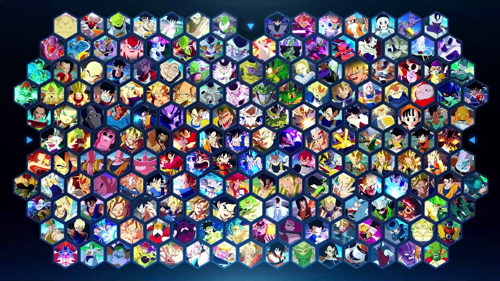

Dragon Ball Sparking Zero
Dragon Ball Sparking Zero was one of my first Dragon Ball games that I’ve ever actually played from the Budokai Tenkaichi Series. My friend recommended it to me and it meant a lot because he was already well versed with what had come out before. The game is very fast paced and depends on the skill of the player. It’s filled with a large character roster, fast movement, beam clashes, and then the classic cinematic special attacks. Players are able to choose between the main cast of heroes then the villains too across the history of Dragon Ball.
Older games had already set the template for the game: quick dashes, ki management, and transformations during battle. Modern technology today allows sharper visuals, better looking effects, and larger arenas while maintaining the same original feeling from back then. The appeal of the game for me was to recreate iconic moments and then make some of my own but with my friends that have also seen the show.
Community interest often centers on roster size, moveset depth, and online features. Content updates and balance tweaks can shape the game’s longevity. With each release, fans compare how newcomer characters play and how legacy fighters have been reworked.
Gallery

